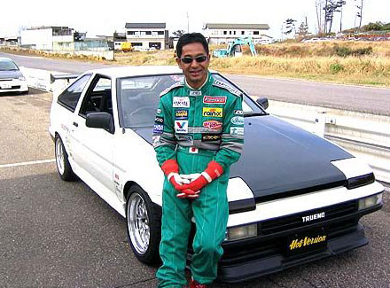

Дрифт-это техника прохождения поворотов и вид автоспорта, характеризующиеся прохождением поворотов с намеренным срывом ведущей оси и проход в управляемом заносе на максимально возможной для удержания на трассе угла скорости, требующие от автомобиля наличие задней ведуще-скользящей оси (можно также выполнять на полном приводе). В большинстве случаев использование такого заноса является не самым быстрым способом прохождения поворотов, но весьма эффектным и зрелищным, благодаря чему соревнования по этому виду автоспорта всегда привлекают много зрителей. Соревнования должны проводиться на асфальте.
Есть много источников и много различных версий возникновения дрифта. Некоторые утверждают, что первые задатки дрифта, уже просматривались в 1930х годах, на соревнованиях Gran Prix, где пилоты, для прохождения сложных поворотов пускали автомобиль в занос.
Но все жеродоначальниками дрифтинга в том виде, какой нам известен в теперешние времена, по праву считается Япония. Тут года сводятся к 1950-1960м, именно к концу 50х, любители нелегальных гонок, стали оттачивать навык прохождения поворотов в заносе на горных дорогах, которые назывались «Тоге», близ городов Нагано, Хаконе, Роккосан и других. В погоне за миллисекундами прохождения трасс и улучшением навыков управления автомобилем в заносе и появился такой красивый вид спорта как Дрифтинг известный так же как Japan Drift. Прародителем дрифтинга, по праву считается японский мотогонщик Кунимицу Такахаси. В автоспорт его привела серьезная травма, полученная впоследствии тяжелой аварии на мототреке. Сила духа, этого человека и любовь к автоспорту, не заставили сомневаться в том, чем заниматься дальше. Он вернулся и стал побеждать, но уже в роли пилота автомобиля. Его участие и победы, были отмечены в таких соревнованиях как, Гран-при Японии, 24 часа Ле Мана, и даже Формула 1. Но известность среди стритрейсеров, ему принесла именно его техника прохождения поворотов. В поворот, он входил на максимально возможной скорости и проходя апекс пускал автомобиль в занос, как это уже делают последователи, при этом не теряя траектории и темпа. Естественно при этом, очень эффектное прохождение поворотов, дым из под колес и всеобщее восхищение.
Популярные вопросы о дрифтинге.